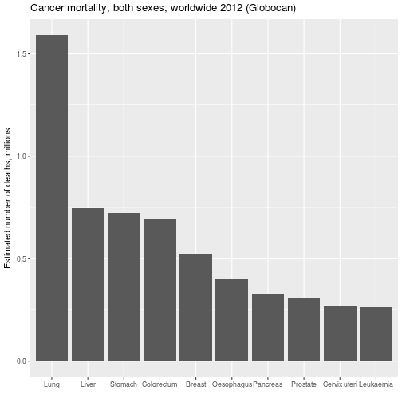
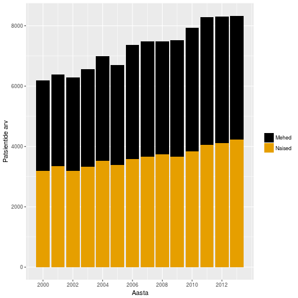
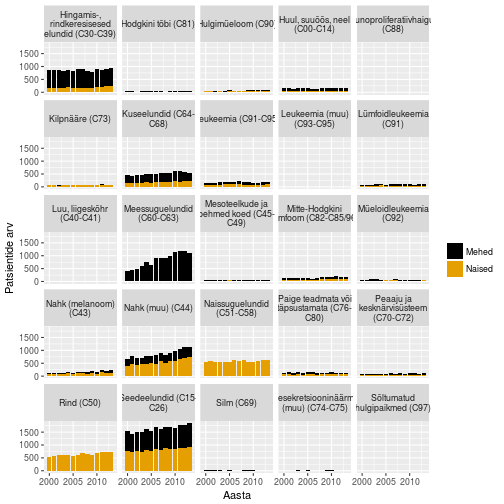
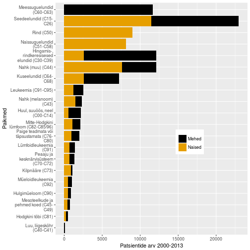

Onkobioloogia
Vähkkasvajate molekulaarsed mehhanismid
Taavi Päll
lektor, Tallinna Tehnikaülikool
Sissejuhatus
Vähk
- Mõiste vähk (tuumor, pahaloomuline kasvaja, neoplasm) tähistab suurt hulka erinevaid haiguseid (NCI ~160 olulisemat) mis võivad tekkida kõigis keha kudedes.
- Vähi tunnuseks on ebanormaalsete rakkude kasv koes väljapoole nende normaalseid piire. Kõrvalolevate kudede invasioon ja levik teistesse organitesse ehk metastaseerumine.
- Metastaasid on ka enamuse kasvajatest tingitud surmade põhjustajaks.
Vähk võib lõppeda surmaga
- Vähkkasvajad on maailmas üks juhtivatest surma põhjustatavatest haigustest, nõudes 8.2 miljonit elu 2012. a (EU-27 osakaal 2012: 1.27 miljonit (15%))
- Kopsu-, maksa-, mao-, kolorektaal- ja rinnakasvajad põhjustavad enim vähisurmasid
- sagedasemad vähitüübid on naistel ja meestel erinevad
- ennustatakse, et haigestumus suureneb maailmas 14 miljonilt 2012.a 22 miljonini 2030-ndatel

Kursuse eesmärk
- Selgitada vähkkasvajate tekke molekulaarseid ja rakulisi mehhanisme
Raamat
- Robert A. Weinberg
The Biology of Cancer
New York, Garland Science, 2007
Kohaviit: 616/W-46
Ajaloost
Egiptus, 16-17. dünastia
- Vanim teadaolev kirjeldus vähist pärineb 1500 BC Egiptusest.
- Papüürus kirjeldab muuseas ka 8 rinnavähi juhtu mida raviti põletusega.
- Kirjutises konstanteeritakse et see haigus on ravimatu.

Kasvajad kui tulnukad
- Hippokrates: vähi "kehavedelike tasakaalu häire teooria" (must-, kollane sapp, veri ja flegma)
- vähke ajalooliselt käsitletud ka kui võõrkeha, mis on ennast haige kehas sisse seadnud.

Kasvajad on koelise struktuuriga
- 1655. avastas Robert Hooke mikroskoopi kasutades, et taimekude koosneb rakkudest.
- Seoses mikroskoopia arenguga 19. saj. saadi aru,
- kasvajad koosnevad rakkudest
- pärinevad normaalsetest kudedest
Vähki põhjustavad kartsinogeenid
- 1775. a. identifitseeris kirurg sir Percivall Pott korstnapühkijatel nõe ja munandikasvajate vahelise seose - keskkonnas leiduvad kartsinogeenid võivad põhjustada vähki.

Tänapäev
Vähiriski mõjutab elustiil
- ~30% vähisurmadest on tingitud viiest käitumis ja dieediriskist:
- kõrge kehamassiindeks,
- vähe puu- ja aedvilju menüüs,
- vähene füüsiline aktiivsus,
- tubakas/suitsetamine,
alkohol
arengumaades põhjustavad 20% vähkidest hepatiidi viirused B ja C ning papilloomiviirused
Ülekaalulisus ja vähk
- Ülekaalulisus ja rasvumine on maailmas kasvav probleem.
- Ülekaalulisus ja rasvumine suurendab vähiriski mitmete vähitüüpide puhul: rinna-, soole-, neeru-, endomeetriumi-, söögitoru- ja pankrease vähk.
- Vähiteraapias on ülekaalulisus ja rasvumine seotud suurenenud vähi tagasi tuleku ja surma riskiga.
- Füüsiline aktiivsus ja tervislik toit vähendavad riski oluliselt.
Kuidas siis ülekaalulisus on vähiga seotud?
- Immuunsüsteemi tervis/funktsioneerimine, põletik
- Teatud hormoonide tase organismis, nagu insulin ja östrogeen
- Rakkude jagunemist reguleerivad kasvufaktorid -- insulin-like growth factor-1 (IGF-1)
- Valgud mis mõjutavad hormoonide toimet organismile, nagu sex hormone-binding globulin
Kasvajarisk on seotud elustiiliga
Suitsetamine: 96% kopsuvähkidest tekib suitsetajatel
| Sigarette päevas enne haigestumist | Suheline risk |
|---|---|
| mittesuitsetaja | 1 |
| 1 kuni 5 | 8 |
| 5 kuni 15 | 12 |
| 15 kuni 25 | 14 |
| 25+ | 27 |
Suitsetamise tõus arengumaades
- Üle 1.3 miljardi inimese suitsetab maailmas tubakat. Suitsetamine põhjustab erinevaid kasvajaid ja vastutab 1/5 vähisurmade eest maailmas.
- Lähis-Idas ja Aafrikas on ajavahemikus 1990-2009 sigarettide tarbimine suurenenud 57%.
- Kuigi keskeas suitsetamise maha jätmine vähendab üle 60% kopsuvähi riski, teevad arengumaades seda vähesed.
- Sigarettide maksustamises nähakse vastumeedet, kuid sissetulekud tõusevad kiiremini kui maksud.

Keskkonna ja elustiilifaktorid
| Type | % of total cases |
|---|---|
| Cancers due to occupational exposures | 1–2 |
| Lifestyle cancers | |
| Tobacco-related (sites: e.g., lung, bladder, kidney) | 34 |
| Diet (low in vegetables, high in nitrates, salt) (sites: e.g., stomach, esophagus) | 5 |
| Diet (high fat, lower fiber, broiled/fried foods) (sites: e.g., bowel, pancreas, prostate, breast) | 37 |
| Tobacco and alcohol (sites: mouth, throat) | 2 |
Kartsinogeenina toimivad nii füüsilised kui keemised mutageenid
- röntgenkiired
- benseen (ägedad leukeemiad)
- vinüülkloriid (maksa angiosarkoom)
- raadium(osteosarkoom)
- asbest (mesotelioom)
- põsetubakas (suuõõne kartsinoom)
- etc. etc
Mutageesuse test: Amesi test
Mutageensus korreleerub kantserogeensusega! Kuid kõik kantserogeenid ei ole mutageenid, selliseid nimetatake kasvaja promootoriteks
- Uuritav aine aktiveeritakse metabooselt kasutades roti maksa ekstrakti
- aktiveeritud aine lisatakse his-mutantsetele Salmonella tassidele
- algne Salmonella mutant ei suuda kasvada söömel milles puudub histidiin
- katse lõpus loetakse kolooniad üle
- mida rohkem kolooniad seda tugevam mutageen
Bruce Ames's carcinogens identified in the normal diet
| Foodstuff | Compound | Concentration in foodstuff |
|---|---|---|
| Black pepper | piperine | 100 mg/g |
| Common mushroom | agaritine | 3 mg/g |
| Celery | furocoumarins, psoralens | 1 mg/g, 0.8 mg/g |
| Rhubarb | anthraquinones | varies |
| Cocoa powder | theobromine | 20 mg/g |
| Mustard, horseradish | allyl isothiocyanate | varies |
| Alfalfa sprouts | canavaninec | 15 mg/g |
| Burnt materialsd | large number | varies |
| Coffee | caffeic acid | 11.6 mg/g |
Kasvajatesse haigestumus Eestis

Kasvajad Eestis paikmete kaupa

Sagedasemad paikmed

Esmased vähid ja 5 aasta suremus
Sõltuvalt vähitüübist võib elulemus varieeruda 10% kuni 90%
Concord 2 uuring

Countries showing highest and lowest incidence of specific types of cancer
| Cancer site | Country of highest risk | Country of lowest risk | Relative risk H/L |
|---|---|---|---|
| Melanoma | Australia (Queensland) | Japan | 155 |
| Lip | Canada (Newfoundland) | Japan | 151 |
| Nasopharynx | Hong Kong | United Kingdom | 100 |
| Prostate | U.S. (African American) | China | 70 |
| Liver | China (Shanghai) | Canada (Nova Scotia) | 49 |
| Penis | Brazil | Israel (Ashkenazic) | 42 |
| Cervix (uterus) | Brazil Israel (non-Jews) | 28 | |
| Stomach | Japan | Kuwait | 22 |
| Lung | U.S. (Louisiana, African American) | India (Madras) | 19 |
| Pancreas | U.S. (Los Angeles, Korean American) | India | 11 |
| Ovary | New Zealand (Polynesian) | Kuwait | 8 |
Vähitüübid
Kliiniline klassifikatsioon
Kliiniliselt võib kasvajad jaotada kaheks
- healoomulised (lokaliseerunud, mitteinvasiivsed)
- pahaloomulised (invasiivsed, metastaatilised)
Metastaasid ehk vähi siirded vastutavad lõviosa kasvajatest tingitud surmade eest!
- TNM-klassifikatsioon

Neli põhilist vähitüüpi
| Epiteliaalsed | Mitte-epiteliaalsed |
|---|---|
| kartsinoomid (carcinoma) | sarkoomid (sarcoma) |
| hematopoieetilised | |
| neuroektodermaaltuumorid |
Epiteel
Kehaosi väljast ja õõsi seest kattev rakukiht (katteepiteel) või näärmeid moodustav rakukogum (näärmeepiteel).

_Endoscopic_resection.jpg)
Basaalmembraan

BM (basement membrane) on epiteeli all asuv rakuvälise maatriksi kiht
- peamiseks funktsiooniks on epiteeli ankurdamine all olevale sidekoele (strooma)
- mehhaaniline barjäär
Kartsinoomid
Kartsinoomid on kõige sagedasemad epiteliaalset päritolu kasvajad
- vastutavad 80% vähisurmade eest
Epiteelid pärinevad erinevatest lootelehtedest
- kops, maks, sapipõis, söögitoru, magu ja soolestik pärineb endodermist
- nahk ektodermist
- munasarjad mesodermist
Kartsinoomid jagunevad laias laastus kaheks
- adenokartsinoomid (adenocarcinoma)
- lamerakk-kartsinoomid (squamous-cell carcinoma)
Kartsinoomide sagedasemad paikmed
| Adeno | Lame-rakk | Muud tüüpi |
|---|---|---|
| kops | nahk | väikeserakuline kopsuvähk (neuroendokriinsed rakud) |
| käärsool (colon) | ninaõõs | suurerakuline kopsuvähk |
| rind | neel (oropharynx) | maksakartsinoom |
| kõhunääre (pancreas) | kõri | neerukasvaja |
| magu | kops | transitoorse epiteeli kasvaja (kusepõis) |
| söögitoru | söögitoru | |
| eesnääre | emakakael | |
| emaka sisemine limaskest (endomeetrium) | ||
| munasari |
Mitte-epiteliaalsed kasvajad
- sarkoomid - sidekoekasvajad
- hematopieetilist päritolu kasvajad (valged verelibled)
- leukeemiad - nn. verevähk
- lümfoomid - tahked kasvajad lümfisõlmedes (B- ja T-rakud)
- neuroektodermaaltuumorid
Sarkoomid
- sidekoe kasvajad
- moodustavad ~1% vähkidest
- mesodermaalset päritolu
| Sagedasemad sarkoomid |
|---|
| osteosarkoom |
| liposarkoom |
| leiomüosarkoom |
| rhabdomüosarkoom |
| fibrosarkoom |
| sünooviumi sarkoom |
| angiosarkoom |
| kondrosarkoom |
Hematopoieetilised ja lümfoidsed kasvajad
Tuumorid mis tekivad veres, luuüdis ja lümfisõlmedes
Rakutüübid:
Äge ja krooniline müelogeenne leukeemia, müelodüsplastilised sündroomid ja müeloproliferatiivsed haigused: granulotsüüdid, erütrotsüüdid, trombotsüüdid, makrofaagid ja nuumrakud (mast cells)
Lümfoomid, lümfotsüütsed leukeemiad ja müeloomid: B-, T-, NK- ja plasma rakud
- äge lümfotsüütne leukeemia (ALL) tekib 80% juhtudel B-rakkudest ja 20% T-rakkudest
Sagedasemad hematopoieetilised kasvajad
| äge lümfotsüütne leukeemia (ALL) |
| äge müelogeenne leukeemia (AML) |
| krooniline müelogeenne leukeemia (CML) |
| krooniline lümfotsüütne leukeemia (CLL) |
| multimüeloom (MM) |
| non-Hodgkin's lümfoom (NHL) |
| Hodgkin's tõbi |

Neuroektodermaalsed kasvajad
- Vähid mis tekivad kesknärvisüsteemis ja perifeerses närvisüsteemis
- ektodermaalset päritolu
- glioomid, glioblastoomid, neuroblastoomid, shwannoomid/oligodendroglioomid ja medulloblastoomid
- moodustavad 1.3% diagnoositud kasvajatest, suremus samas kõrge 2.5% vähisurmadest
CNS/PNS kasvajad
- glioblastoomid GBM ja astrotsütoomid: astrotsüüdid
- GBM, agressiivne IV staadiumi astrotsütoom
- shwannoomid/oligodendroglioomid pärinevad müeliini moodustavatest rakkudest
- retinoblastoom
- neuroblastoomid pärinevad PNSi ganglionitest

Vähid mis ei klassifitseeru eelnimetatud gruppidesse
- melanoom - nahakasvaja, neuroektodermaalset päritolu: naha melanotsüüdid pärinevad neuraalharjast
- väikeserakulised kopsukasvajad (SCLC) - sarnased neurosekretoorsetele rakkudele

Reeglina säilitavad vähid oma päritolu-koe tunnused
Olulise ühendva bioloogilise printsiibina säilitavad vähirakud alati mõne distinktse diferentseerunud tunnuse mis seob neid oma päritolukoega

Epiteeli-mesenhümaalne transformatsioon
EMT on raku transdifferentseerumine, kus algne kartsinoomi rakk omandab mesenhümaalse fenotüübi
- EMT on seotud metastaseerumisega
- NB! EMT ei ole kartsinoomis histoloogiliselt jälgitav
- tegemist võib olla transientse seisundiga

Anaplastilised kasvajad
Anaplaasia - kasvaja mis on kaotanud koespetsiifilised tunnused (1-2% juhtudest)
- histopatoloogliselt pole võimalik identifitseerda päritolu-kude
- võib tekkida dediferentseerumise teel
- võib pärineda tüvirakkudest
- pleomorfism, rakud ja tuumad on ebaühtlase suuruse-kujuga

Molekulaarne klassifikatsioon
- osad kasvajad koespetsiifilised, teised mitte:
- kopsu lamerakk, pea-kaela ja osa põiekasvajaid moodustavad ühe alatüübi
- põievähid lahknevad eri alatüüpidesse.

Vähid arenevad progresseeruvalt
Vähi staadiume iseloomustab järk-järguline progresseerumine healoomulisest kasvajast kuni metastaasideni

Kasvaja kliiniline progressioon
Neoplaasiad - eri tüüpi kasvajalised moodustised
Rohkem-vähem defineeritud "peatused" kasvaja arengus:
Normaalne kude > hüper-/metaplastiline > düsplaasia > lokaalselt invasiivne > metastaasid
Healoomulised kasvajad
Healoomulised (benign) kasvajad võivad olla hüperplastilised või metaplastilised (hyperplastic, metaplastic)
- hüperplastiline kude näeb välja normaalsena, välja arvatud märgatavalt suurenenud rakkude arv
- metaplastilises koes on üks normaalne kude asendunud teisega nt. Barreti söögitoru

Düsplaasia

Düsplaasiad sisaldavad juba rakke mis näevad välja ebanormaalsed.
- healoomulised kuid pre-maliigne seisund (basaalmembraan on terve!)
- adenoomid, polüübid, papilloomid, soolatüükad
Pahaloomulised kasvajad
iseloomustab invasiivsus st. vähirakud on tunginud läbi basaalmembraani
- lokaalselt invasiivne
- siirded

Metastaasid e. siirded
Kasvajakolooniate teke keha teistesse osadesse/organitesse
- lisaks invasiivsusele peab vähirakk omandama ka amööbse liikumise võime (motility)
- ja võime adapteeruda "võõras keskkonnas"
Kasvajad on monoklonaalsed
Teoreetiliselt võivad kasvajat moodustavad vähirakud olla kas monoklonaalset või polüklonaalset päritolu
- Epigeneetika viitab monoklonaalsele päritolule: X-kromosoomi inaktivatsioon on rakkudes juhuslik, 30% Aafrika päritolu naistel on polümorfsm G6PD geenis (asub X-is), leiomüoomi heterosügootsete patsientidel leiti, et igal leiomüoomil esines ainult ühte geeni versiooni
- müeloomid, müeloomid pärinevad B-rakkude eellastest, antikehi tootvatest plasmarakkudest, iga antikeha toodab üks kloon, igal patsiendil toodab müeloom vaid ühte antikeha